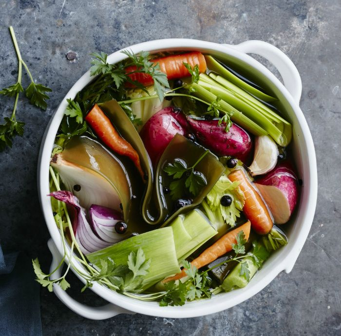
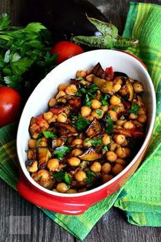

Rețete - Regimuri de slăbit - Cori Grămescu
 Mananc Diete Rețete Traiesc Antrenamente Experiente Lucrez Antreprenoriat Coaching Recomand Ce recomand Contact Despre Cori Activitate profesională Apariţii în presă Premii Magazin Cauta in site
Rețete
Acasa / Mananc / RețeteRețete culinare sănătoase pentru regimuri speciale de slăbit. Învață să mănânci ținând cont de valorile nutritive din mâncare astfel încât să poți păstra corpul cât mai sănătos.
Am creat o serie de diete și programe personalizate de exerciții care te pot ajuta. Intră pe magazin și comandă dieta sau programul care ți se potrivește!
Rețetele sunt ușor de urmat, conțin ingrediente sănătoase, utile regimurilor de slăbire eficientă.
15.03.2019Ce trucuri te salveaza ca sa mananci sanatos cand nu ai timp?
Scris de Cori GrămescuCele mai multe dintre clientele mele nu au timp. Fie din cauza programului de lucru, fie din cauza unei vieti de familie foarte solicitanta, fie din cauza amandurora, subiectul lipsei de timp apare in mod constant in discutiile noastre despre gatit sanatos.
Adevarul e ca le inteleg, pentru ca si eu trec prin situatii similare de cele mai multe ori – locuiesc langa una din pietele mari din Bucuresti si totusi am luni intregi in care nu reusesc sa ajung sa imi cumpar mancare din piata.
Citeste
02.04.2018
Retete usoare cu macrou de la RIO Mare
Scris de Cori GrămescuRomanii se afla pe ultimele locuri in Europa in ceea ce priveste consumul de peste si astfel pierd multe dintre beneficiile aduse sanatatii prin consumul regulat de peste. Macroul este un peste oceanic bogat in acizi grasi esentiali omega-3, este o sursa de proteine de buna calitate si de asemenea ne asigura un aport sanatos de vitamina D si seleniu. Iata si doua retete simple cu macrou, foarte usor de preparat acasa!
Citeste
28.02.2018
Rețeta cu fasole verde gustoasă și dietetică
Scris de Cori GrămescuReteta cu fasole verde e nelipsita in orice cura de slabire, dieta sau plan alimentar echilibrat, doar ca e destul de greu sa faci mancarea de fasole verde sa fie savuroasa daca nu vrei sa folosesti prajeala si rantas. Eu ma consolasem cu ideea ca o sa mananc fasole verde sautee care nu are niciun gust, pana cand mi-a facut mama reteta asta si de atunci doar asa o prepar. Iata cum se face repede si usor reteta de fasole verde buna si la gust si la slabire.
Citeste
25.02.2018
Reteta de mancare de broccoli dietetica, de post
Scris de Cori GrămescuReteta de mancare de broccoli este indicata atat in post cat si pentru cei care doresc sa urmeze o dieta sanatoasa. Este o reteta care poate fi folosita in dieta de slabire pentru ca are putine calorii si multe fibre si este totodata foarte gustoasa, dar poate fi o parte dintr-un fel de mancare de post care sa nu ne puna in pericol sanatatea.
Iata cat de simplu se prepara retea de mancare de broccoli de post:
Citeste
11.12.2017
Retete pentru gratarul electric Heinner
Scris de Cori GrămescuRetete pe care le gatesc doar pentru mine, sunt relativ simple, pentru ca nu trebuie sa acopar mai multe tipuri de preferinte alimentare. Insa chiar si asa, provocarea mea vine din reducerea plictiselii si eliminarea rutinei alimentare, care pot sa imi scada motivatia de a manca sanatos pur si simplu pentru ca devine monoton si plictisitor .Totodata, e destul de complicat sa gatesc zilnic, desi ma numar printre norocosii care au ajutor cu treburile casei. Nu vreau sa ma gandesc cat de greu e sa gatesti zilnic atunci cand ai pe cap si treburile casei. Solutia in acest caz este sa gatim inteligent, folosind aceeasi baza pentru diferite preparate . Iata cateva idei de retete simplu de implementat pentru slabire.
Citeste
29.08.2017
Suc de rosii cu rosii din gradina mamei
Scris de Cori GrămescuToata vara mama mi-a adus rosii din gradina ei. Imperfecte, crescute natural, mirosind a vara fierbinte, prafuita si uscata. Rosiile pe care le stiu eu de la tara de la Plenita, cand vrejurile se cocosau obosite sub greutatea lor si se simtea mirosul de dincolo de gardul ce imprejmuia randurile chitite de araci ce sustineau rosiile. Numai cine a crescut la tara stie ce bucurie era sa iei seara din vrej rosii, sa le speli de praf, sa le adaugi ceapa, otet si un bot de paine si branza. Era mancarea de vara perfecta, in serile copilariei mele la Plenita, intre valatuci de praf lasati de vreo Dacie care trecea pe ulita satului si mirosul de busuioc ce se ridica atunci cand incepea udatul gradinilor.
Citeste
11.03.2017
Reteta dietetica de placinta
Scris de Cori GrămescuReteta dietetica de placinta te salveaza ori de cate ori ai chef sa mananci ceva bun si gustos, dar sarac in calorii si bogat in proteine. Am ales pentru aceasta reteta dietetica de placinta spanacul pentru ca primavara este in sezon, se gaseste proaspat in piata si are un continut ridicat de folati si de fibre, avand totodata foarte putine calorii. Este foarte indicat in curele de slabire pentru ca tine de foame si poate fi folosit in mai multe retete dietetice.
Pentru reteta dietetica de placinta cu spanac ai nevoie de spanac proaspat, ceapa, oua, telemea sau feta si dakos, o paine greceasca din hrisca, coapta de 2 ori. Se gaseste la supermarket-uri mai rasarite dar, daca nu gasesti acest produs nu e nicio problema, poti inlocui cantitatea de dakos cu fulgi de hrisca. Nu o sa aiba chiar aceeasi consistenta, dar merge foarte bine.
07.03.2017
Cum faci un sanvis sanatos
Scris de Cori GrămescuCum faci un sanvis sanatos? Pentru ca de comod e comod, de gustos e gustos. Insa, odata cu inceputul sezonului de slabit, problema optiunilor alimentare sanatoase, usoare si sarace in calorii se ridica tot mai des. Clientii mei care au program incarcat dimineata pregatit copiii de scoala, drum lung pana la birou, pregatit diverse restante pentru facultate sau job adesea prefera sa sara peste micul dejun sau aleg sa manance un pachet de biscuiti, covrig sau patiserie din lipsa de timp. De aceea am pregatit acest text, despre cum sa faci un sanvis sanatos, care sa nu iti arunce in aer caloriile, mai ales cand vrei sa slabesti.
Citeste
06.03.2017
Curry cu legume, mei si quinoa
Scris de Cori GrămescuCurry cu legume, mei si quinoa este ultima mea descoperire de post. In cazul in care sunt vreunii dintre cititorii mei cu experienta in bucatarie, ii rog tare sa nu dea cu pietre, pentru ca aceasta reteta a aparut intr-o seara de duminica in care nu aveam nimic altceva de mancare prin casa, dar cumva a iesit gustos. In plus, aceasta reteta de curry se prepara foarte rapid si nu necesita cunostinte savante de gatit.
CitesteDescopera PROGRAMELE ONLINE de Dieta si sport recomandare de CORI! 1 2 3 … 5 Daca ti-a placut sau ai gasit util articolul, nu uita sa lasi mai jos un comentariu sau o parere!
Link-uri utile
ANPC Politica de confidentialitatePostari recente
5 obiceiuri mai bune decat cantarirea zilnica pe care trebuie sa le faci cand slabesti
21.06.2020
Programul meu de echilibru hormonal
20.06.2020
Impreuna, mai puternici!
30.04.2020
YouTube
Error: The account for corigramescu needs to be reconnected.
Due to recent Instagram platform changes this Instagram account needs to be reconnected in order to continue updating. Reconnect on plugin Settings page
Error: No posts found.
Make sure this account has posts available on instagram.com.
Error: admin-ajax.php test was not successful. Some features may not be available.
Please visit this page to troubleshoot.
© Copyright 2020 - cori.ro. ×Descoperă secretele de dietă și sport alături de Cori!
Îți mulțumesc că ești prietena mea!
@corigramescu @corigramescu Cori Gramescu